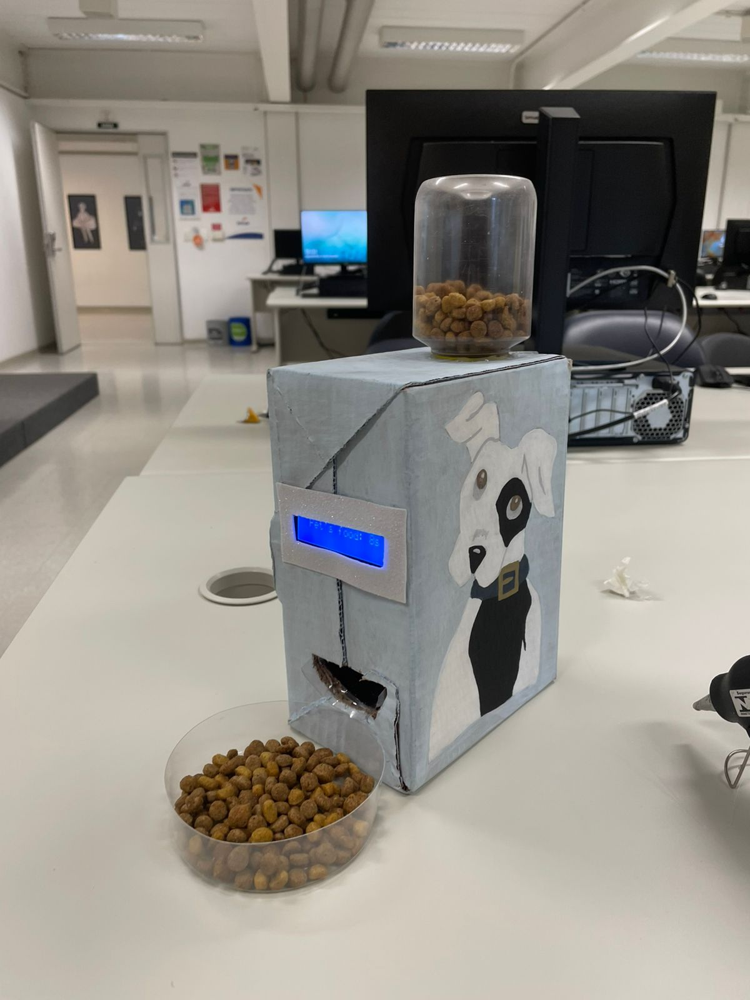

Nesse trabalho desenvolvemos um sistema feito através de um circuito tanto físico quanto no TinkerCard, onde foi inserido em um boné que funcione juntamente com um sensor de ré, podendo detectar a ausência de luz no ambiente e expandir sinais sonoros utilizando o Arduino.
Nesse trabalho desenvolvemos um sistema feito através de um circuito físico e montamos um projeto físico com Arduino, onde foi inserido o sistema para que o carrinho conseguisse se movimentar de acordo com códigos determinados e seguir linhas por meio de sensores incluídos no projeto.
Nesse trabalho desenvolvemos um código para que o foi solicitado, montamos a Lixeira com a organização devida e organizamos o circuito físico com Arduino, o motor e o sensor, onde foi inserido o sistema para que a Lixeira conseguisse abrir e fechar a tampa de acordo com códigos determinados.
Nesse trabalho desenvolvemos um código com a ajuda do professor para que o foi solicitado, montamos o Dispensador com a organização devida e organizamos o circuito físico com Arduino, motor e display, onde foi inserido o sistema para que o Dispensador conseguisse liberar a ração de acordo com códigos e tempos determinados.
Os armários são onde estão os kits com os materias disponibilizados pelo Senac, onde cada aluno tem acesso a um próprio, pois cada kit tem a sua numeração e cada aluno por ordem de chamada recebe o seu. Nos armários também temos os outros kits onde estão os outros itens que o professor nos deixa usar para um trabalho.